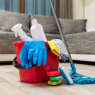
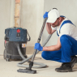
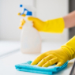
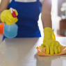
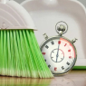

- Немецкое и Американское оборудование
- Гипоаллергенные безопасные моющие
- Соблюдаем санитарные нормы
- Оплата по результату после уборки
6 видов уборки под любую Вашу задачу
Наши услуги подойдут для семейных пар с детьми, владельцев животных, аллергиков, арендодателей
-

Генеральная уборка
Комплексная уборка с удалением пыли, жира и грязи
Время работы: 5-7 часов -

Уборка после ремонта
Подготовим ваше помещение к комфортному проживанию
Время работы: 5-7 часов -

Поддерживающая уборка
Уборка, для поддержания чистоты в квартире
Время работы: 2-4 часа -
Мойка окон и панорам
За чистыми окнами — грязь не живёт!
Время работы: 2-4 часа -

Защитное покрытие
Глубокая очистка и нанесение защитного слоя полироли
Время работы: 6-12 часов -

Экспресс уборка
Срочная уборка с выездом в течении часа
Время работы: до 3 часов
Наша команда – это обученные, высокоорганизованные и прошедшие профессиональный отбор сотрудники, которые относятся к уборке помещений, не как к ремеслу, а как к профессиональной современной услуге, которая требует от исполнителей мастерства, сноровки и специальных знаний в области клининга!
Мы следим за новинками, которые регулярно появляются в сфере клининга, чтобы предложить Вам лучшее решение любой даже самой сложной задачи.
Специалисты нашей компании работают для Вас 24 часа 7 дней в неделю, что позволяет нам быть оперативнее конкурентов и выполнять больший объем за кратчайшие сроки.
Миссия нашей компании – подарить людям свободное время. Мы, как профессионалы, понимаем сколько времени и сил занимает уборка у частных лиц, а так же, насколько трудно организовать собственный штат для обеспечения помещения клинингом.
Часто задаваемые вопросы
-
Нужно ли мне быть дома во время уборки?
Многие клиенты остаются дома, когда впервые заказывают уборку. В дальнейшем многие предпочитают оставлять менеджера и клинеров дома, а в освободившееся время занимаются более приятными делами
-
Клинеры приезжают с необходимым инвентарем и средствами?
Да, наши специалисты укомплектованы необходимым инвентарем и чистящими средствами. Мы используем только профессиональную химию и оборудование. И это позволяет нам добиваться идеальной чистоты!
-
Не испортите ли Вы мне что-то?
Опыт нашей работы больше 8 лет. За это время мы разработали уникальную программу обучения для наших сотрудников. Клинеры знают каким способом и на каких поверхностях нужно использовать специализированную химию. Поэтому мы обеспечим сохранность Вашего имущества.
-
Вы отмываете затирку с плитки?
Да, у нас есть специальные средства для бережного удаления затирки с различных поверхностей.
-
Снимаете ли Вы застарелую пленку с окон?
Это достаточно трудоемкий процесс и поэтому лучше снимать пленку сразу после установки окон. Но, если Вы этого не сделали, то мы с помощью парогенератора и специальной химии снимем пленку.
-
Сколько человек приедет на мой заказ?
Все зависит от степени загрязнения и объема работ. Это может быть как 1 человек, так и 10 человек